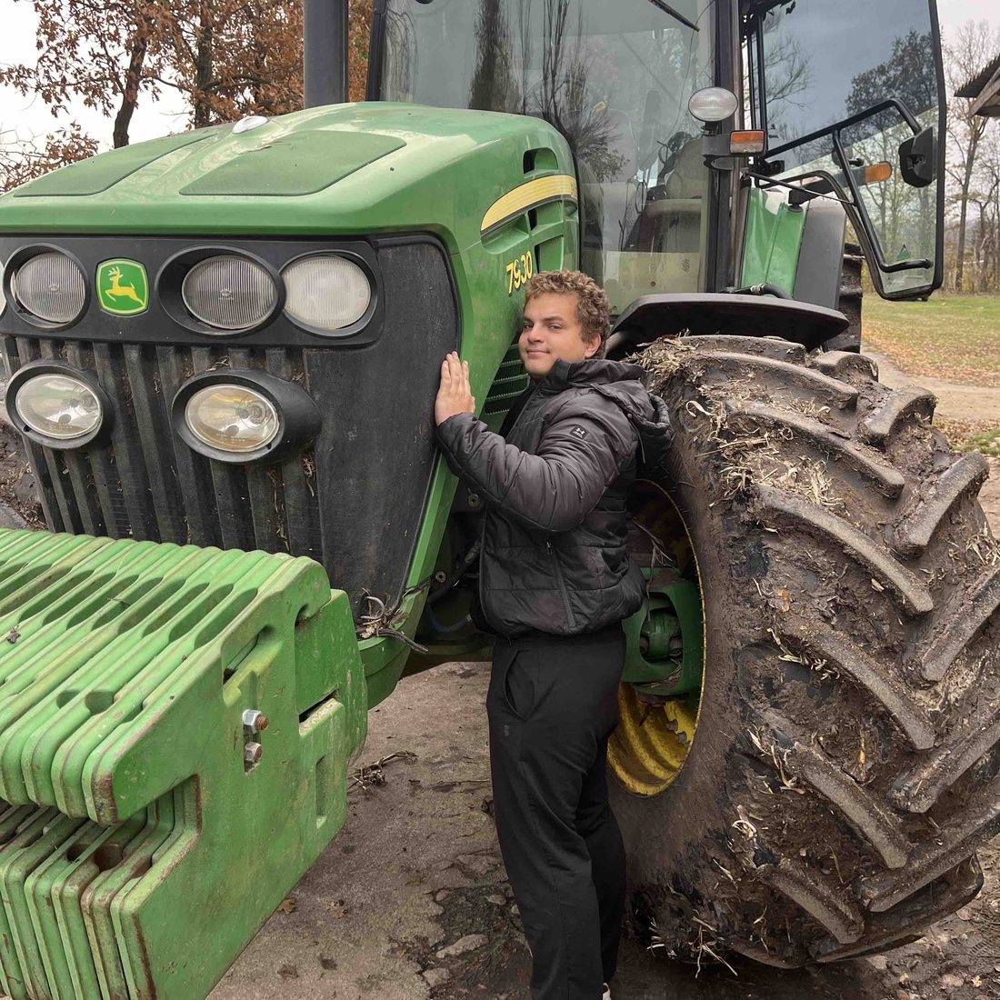
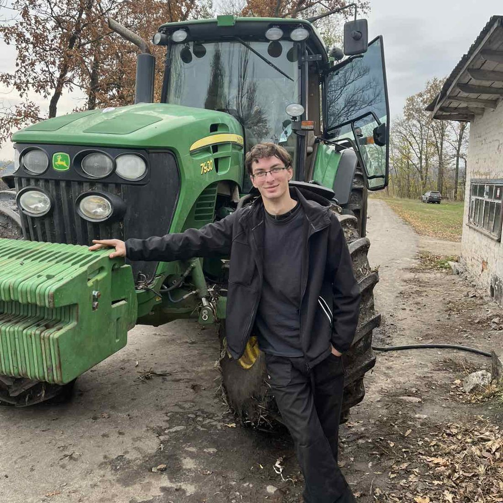
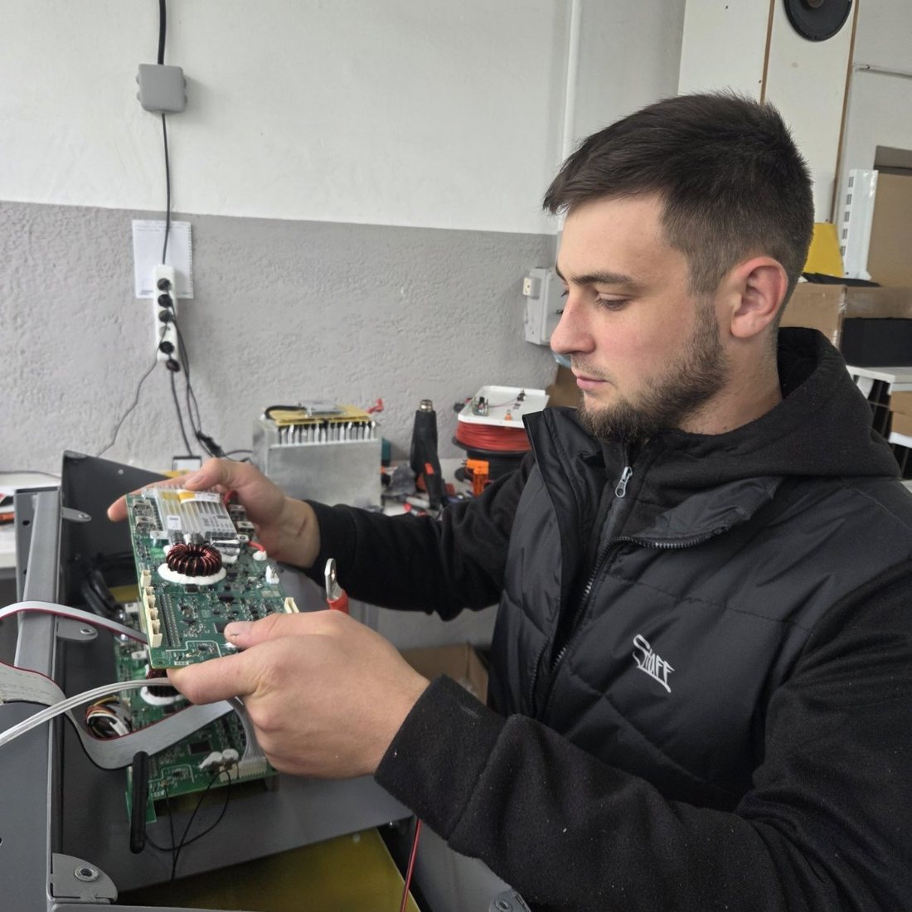
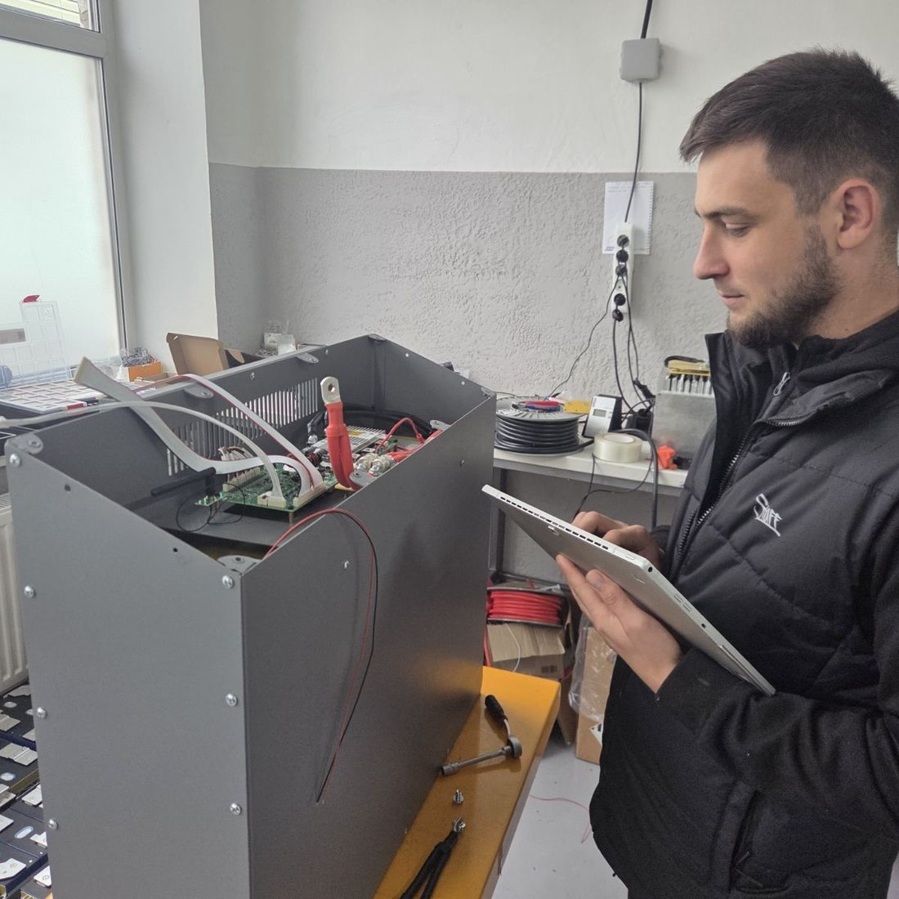

Факультет інженерних та прикладних технологій · Уманський національний університет
Студент навчається в університеті й водночас працює за фахом на підприємстві — за трудовим договором, із зарплатою і наставником.
Робота на підприємстві не додається до навчання, а зараховується замість частини аудиторних і самостійних годин. Диплом той самий, що й на звичайній формі.
Навчальний рік 2026–2027 · 1800 год · 60 кредитів ЄКТС
В університеті · 27 кредитівНа робочому місці · 33 кредити
Типовий розподіл для бакалавра й магістра агроінженерії. Положення дозволяє від 25 % до 60 % обсягу на робочому місці.
Два місця навчання, одна освітня програма і один диплом.
Коротко
Здобувач оформлений на підприємстві: трудовий договір, запис у трудовій, зарплата, страховий стаж. До випуску в нього вже є досвід на реальній техніці, а не лише навчальна практика.
Частину освітніх компонент здобувач опановує безпосередньо на виробництві. Це фіксує індивідуальний навчальний план: які теми, скільки годин і яким доказом підтверджуються.
На підприємстві за здобувачем закріплено наставника, від кафедри — куратора. Вони разом складають програму практичного навчання і стежать, щоб робота відповідала фаху.
Порядок
Шість кроків від домовленості з підприємством до зарахування результатів. Кожен крок має свій документ за Положенням про дуальну форму здобуття вищої освіти.
Номери пунктів клікабельні — текст пункту Положення відкривається просто на сторінці. Підкреслені додатки відкривають готовий зразок документа.
Роботодавець підтверджує, що має виробничу базу, обладнання і персонал для підготовки здобувачів за фахом. Університет укладає з ним рамковий договір про співпрацю.
Університет, підприємство і здобувач підписують договір про дуальну форму. Здобувач пише заяву про переведення; наказ визначає дату виходу на робоче місце.
Кафедра розписує кожну освітню компоненту на дві колонки: що залишається в університеті, а що здобувач опановує на робочому місці. Загальний обсяг і кредити не змінюються.
Додаток Д
Куратор і наставник складають матрицю трудових функцій і результатів навчання, календарний графік та ротації між підрозділами — від машинно-тракторного парку до ремонтної майстерні й інженерної служби.
Додаток Е · п. 7.8
Здобувач записує виконані роботи і години, наставник підтверджує їх підписом наприкінці місяця.
2026–2027 навчальний рік
Обсяг на робочому місці рахується з навчального плану групи й округлюється до цілих кредитів.
| Група | Здобувачів | На робочому місці | Разом за рік | Розподіл |
|---|---|---|---|---|
| Агроінженерія · 38 здобувачів | ||||
| 11-ім | 5 | 990 год · 33 кр. | 1800 год | |
| 12-ім | 5 | 990 год · 33 кр. | 1800 год | |
| 21к-ім | 1 | 990 год · 33 кр. | 1800 год | |
| 31-ім | 4 | 975 год · 32,5 кр. | 1770 год | |
| 31к-ім | 4 | 1005 год · 33,5 кр. | 1830 год | |
| 41-ім | 3 | 990 год · 33 кр. | 1800 год | |
| 43-ім | 2 | 990 год · 33 кр. | 1800 год | |
| 11м-ім | 14 | 990 год · 33 кр. | 1800 год | |
| Геодезія та землеустрій · 3 здобувачі | ||||
| 31-зм | 1 | 675 год · 22,5 кр. | 1800 год | |
| 41-зм | 1 | 675 год · 22,5 кр. | 1800 год | |
| 11м-зм | 1 | 675 год · 22,5 кр. | 1440 год | |
Здобувачі стають на робоче місце з 1, 12 або 19 жовтня 2026 року — залежно від дати наказу — і працюють до 30 червня 2027 року.
Де працюють наші здобувачі
Від фермерських господарств до дилерських центрів і переробних комбінатів. Робоче місце підбирають так, щоб профіль підприємства збігався з профільними компонентами освітньої програми.
Як це виглядає




На публікацію знімків отримано згоду здобувачів.
Що завантажити
Усі форми — додатки до Положення про дуальну форму здобуття вищої освіти в Уманському національному університеті.
Що питають найчастіше
Так. Дуальна форма передбачає оформлення на роботу: трудовий договір, посада, зарплата і страховий стаж. Розмір оплати визначає роботодавець за штатним розписом.
Від 25 % до 60 % обсягу освітньої програми. У нас це здебільшого 55 % — 990 годин із 1800 за навчальний рік. Виробнича практика і кваліфікаційна робота виконуються на робочому місці повністю, а захист — в університеті.
Ні. Освітня програма, перелік компонент і кількість кредитів ті самі. Змінюється тільки місце, де здобувач опановує частину з них.
Здобувач може відмовитися від дуальної форми і повернутися до звичайного навчання. Зараховані результати при цьому не скасовуються.
Проводить інструктажі з охорони праці, допускає до роботи, веде здобувача по підрозділах за графіком ротацій, підтверджує години у щоденнику і наприкінці року готує висновок про досягнуті результати навчання.
Одне невиконане завдання не означає негативного висновку. Таку компоненту здобувач доопрацьовує в університеті в звичайному порядку.
Здобувачу
Роботодавцю
Куди звертатися